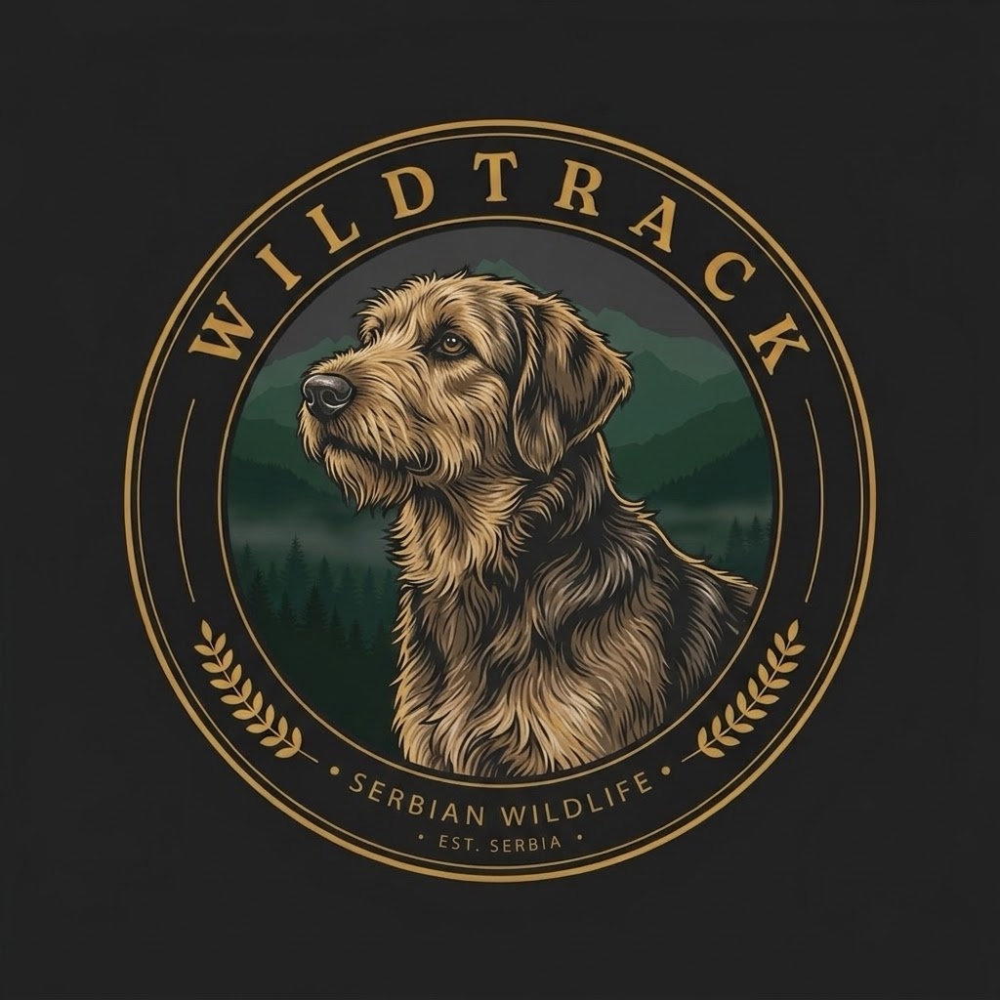

POŠTOVANJE
Prema ljudima, životinjama, prirodi i pravilima platforme na kojoj se družimo.

WILDTRACK COMMUNITYMesto za ljude koje povezuju priroda, tradicija, odgovornost i međusobno poštovanje.
WILDTRACK COMMUNITY okuplja ljude koji dele interesovanje za prirodu, pse, tradiciju i odgovoran odnos prema okruženju. Ovde se ne skuplja publika, nego zajednica koja zna šta joj je važno.
Prema ljudima, životinjama, prirodi i pravilima platforme na kojoj se družimo.
Za ono što objavljujemo, za sopstvene reči i za odnos prema okruženju u kome živimo.
Isti trag, različiti ljudi. Zajednica počiva na međusobnom uvažavanju.
Tišina pre svitanja. Magla se još drži za stabla.
Trag se ne trči. Trag se čita: strpljenjem, iskustvom i poštovanjem.
Kad padne mrak, šuma nastavlja svoj život. Mi smo samo gosti u njoj.
Zato postoje pravila. Zato postoji WILDTRACK ZAKON.
PROČITAJ ZAKON
WILDTRACK COMMUNITY poštuje TikTok pravila i standarde bezbednosti. Svaki član grupe dužan je da poštuje smernice platforme.
Ovo je sažetak relevantnih TikTok pravila, a ne zvanični dokument TikTok-a, i ne zamenjuje zvanične smernice.
Zvanični dokumenti: TikTok Community Guidelines · TikTok Terms of Service
Poštujemo platformu. Poštujemo ljude. Čuvamo zajednicu.
Pročitaj WILDTRACK ZAKON, upoznaj se sa pravilima i pridruži se zajednici NA ISTOM TRAGU.
PRIDRUŽI SE ZAJEDNICIPridruživanjem grupi prihvataš obavezu poštovanja WILDTRACK ZAKONA. Zahteve obrađuje TikTok, a administrator ih lično odobrava ili odbija unutar grupe. Slanje zahteva ne garantuje prijem.